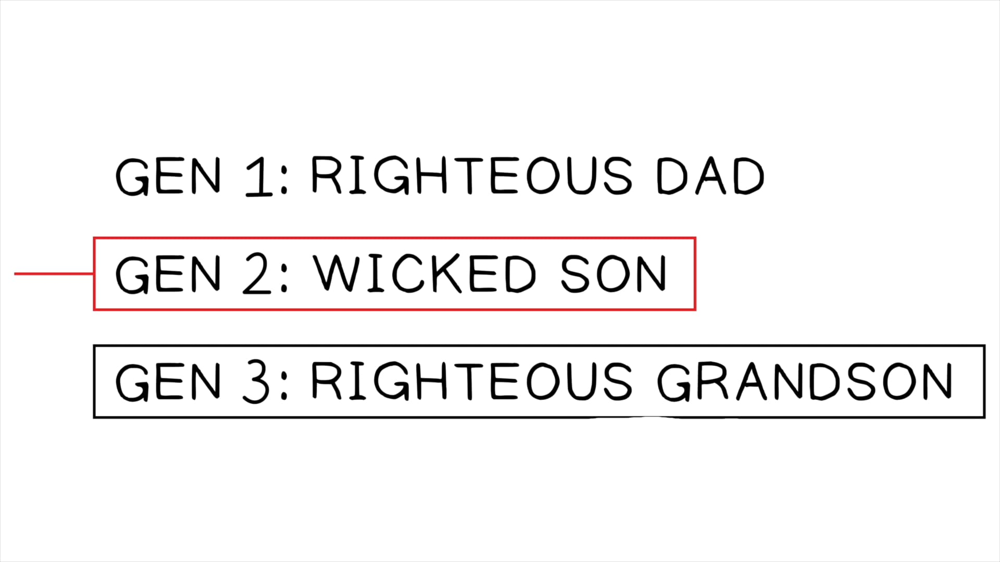

Ezequiel 18:1-32. Tradução e Design Literário por Tim Mackie para BibleProject Classroom: Ezequiel (2021).Ezekiel 18:1-32. Translation and Literary Design by Tim Mackie for BibleProject Classroom: Ezekiel (2021).
Geração #1: Um Pai JustoGeneration #1: A Righteous Father
Geração #2: Um Filho PerversoGeneration #2: A Wicked Son
Geração #3: Um Neto JustoGeneration #3: A Righteous Grandson
Exemplo #1: Um Homem Perverso que se VoltaExample #1: A Wicked Man Who Turns
Exemplo #2: Um Homem Justo que se VoltaExample #2: A Righteous Man Who Turns
Ezequiel enfrenta as ideias difundidas entre o Israel exilado que os impedem de assumir plenamente a responsabilidade pela destruição de Jerusalém e de ver qualquer razão para voltar-se a Yahweh em busca de esperança. Essas ideias estão resumidas nos “provérbios” que Ezequiel cita e refuta.Ezekiel takes on the widespread ideas among exiled Israel that prevent them from fully owning their responsibility for Jerusalem’s destruction and from seeing any reason to turn back to Yahweh for hope. These ideas are summarized in the “sayings” Ezekiel quotes and refutes.
Em 18:1-20, Ezequiel desafia a ideia de culpa geracional. O povo diz: “Os pais comem uvas azedas, e os dentes dos filhos ficam dormentes.” Em 18:2, “ficam dormentes” vem da tradução da Septuaginta do mesmo provérbio citado por Jeremias em Jeremias 31:29 (ou 38:29 na Septuaginta grega) como αἱμωδιάω, “tornar-se contraído, ficar dormente,” referindo-se à convulsão dos músculos da boca ao comer coisas realmente azedas.In 18:1-20, Ezekiel challenges the idea of generational guilt. The people say, “The parents eat sour grapes, and the children’s teeth are set on edge.” In 18:2, “set on edge” comes from the Septuagint’s translation of the same proverb quoted by Jeremiah in Jeremiah 31:29 (or 38:29 in the Old Greek) as αἱμωδιάω “to become contracted, to be set on edge,” referring to the seizure of mouth muscles when eating really sour things.
O significado básico deste provérbio é que quando as crianças sofrem, é por causa das más decisões dos seus pais. No contexto de Ezequiel, este provérbio está dizendo que muitos israelitas estão sofrendo no exílio babilônico, mas é o resultado das violações de aliança das gerações anteriores (especificamente Manassés, ver 1 Rs 21). A implicação é que a geração de Ezequiel não é responsável pelo desastre, mesmo que esteja sofrendo as consequências.The basic meaning of this proverb is that when children suffer, it’s because of their parents’ bad decisions. In Ezekiel’s context, this proverb is saying that many Israelites are suffering in Babylonian exile, but its the result of covenant violations of earlier generations (specifically Manasseh, see 1 Kgs. 21). The implication is that Ezekiel’s generation is not responsible for the disaster, even though they are suffering the consequences.
Esta é uma mentalidade de transferência de culpa que cega os exilados para a sua própria contribuição (capítulos 8-11!) para as suas circunstâncias.This is a blame-shifting mentality that blinds the exiles to their own contribution (chapters 8-11!) to their circumstances.
Yahweh adota um princípio da lei criminal de Israel: quando um indivíduo comete um crime, esse indivíduo é o que deve sofrer as consequências, não outro membro da família.Yahweh adopts a principle from Israel’s criminal law: When an individual commits a crime, that individual is the one who should suffer the consequences, not another family member.
Os pais não devem ser mortos pelos seus filhos, nem os filhos pelos seus pais; cada um morrerá pelo seu próprio pecado.Parents are not to be put to death for their children, nor children put to death for their parents; each will die for their own sin.
O fascinante é que Ezequiel pega este princípio legal e o aplica a uma situação que não é um caso criminal claro. Em vez disso, ele o aplica à experiência comunitária de desastre e exílio babilônico de Israel. Os contemporâneos de Ezequiel negam qualquer responsabilidade pela situação, e assim o argumento apresentado em Ezequiel 18 é um esforço retórico para convencê-los do contrário.What’s fascinating is that Ezekiel takes this legal principle and applies it to a situation that is not a clear-cut criminal case. Rather, he applies it to Israel’s communal experience of disaster and Babylonian exile. Ezekiel’s contemporaries deny any responsibility for the situation, and so the argument presented in Ezekiel 18 is a rhetorical effort to persuade them otherwise.
Para convencer os israelitas de que os seus próprios pecados contribuíram para o desastre do exílio, ele usa um princípio legal e argumenta de trás para frente.To convince the Israelites that their own sins contributed to the disaster of the exile, he uses a legal principle and argues backwards.
Esta geração perpetuou o mesmo que os seus pais. Em 18:4, “... o ser humano individual que peca, esse é o que morrerá,” implica que se o povo está sendo “morto” no exílio (ver os ossos secos de Ez 37), é pelas suas próprias decisões. A resposta de Yahweh é “Parem de transferir a culpa!”This generation has perpetuated the same as their fathers. In 18:4, “... the individual human who sins, that is the one who will die,” implies that if the people are being “put to death” in exile (see the dry bones of Ezek. 37), it is for their own decisions. Yahweh’s response is “Stop blame-shifting!”
Ezequiel estende o argumento através de um estudo de caso explorando a resposta de Deus à retidão, rebelião e arrependimento das pessoas. O estudo de caso testa três gerações: um pai justo, um filho perverso e um neto justo que não morre pelos pecados do seu pai.Ezekiel extends the argument through a case study exploring God’s response to people’s righteousness, rebellion, and repentance. The case study tests three generations: a righteous father, a wicked son, and a righteous grandson who does not die for his father’s sins.
A implicação deste estudo de caso é que os exilados pensam que são o neto justo (geração #3), mas Ezequiel está tentando mostrar-lhes que eles são o filho perverso (geração #2)!The implication of this case study is that the exiles think they are the righteous grandson (generation #3), but Ezekiel is trying to show them they are the wicked son (generation #2)!
“Ezequiel aborda a questão do seu público: se a geração presente fosse justa, eles não estariam sofrendo; já que estão sofrendo, isso deve ser por causa dos seus próprios pecados. Os ouvintes de Ezequiel não podem ser os filhos justos de pais perversos, como supõem ser ... Ezequiel não está preocupado aqui com uma teoria de individualismo moral em contraste com a responsabilidade coletiva. Ele toma como certo o princípio legal de ‘responsabilidade individual’ e o emprega nos seus três casos hipotéticos, mas a possibilidade de Yahweh julgar indivíduos isolados dos seus contemporâneos nunca é considerada. Isso porque a questão em jogo é diferente, a saber, ‘Por que esta crise nacional aconteceu,’ uma crise que é, por definição, comunitária.”“Ezekiel addresses the question of his audience: if the present generation were righteous, they would not be suffering; since they are suffering, this must be because of their own sins. Ezekiel’s hearers cannot be the righteous sons of wicked fathers, as they suppose themselves to be ... Ezekiel is not concerned here with a theory of moral individualism in contrast to collective responsibility. He takes for granted the legal principle of ‘individual responsibility’ and he employs it in his three hypothetical cases, but the possibility of Yahweh judging individuals in isolation from their contemporaries is never considered. This is because the question at issue is a different one, namely, ‘Why did this national crisis happen,’ a crisis that is by definition, communal.”
A colocação literária do capítulo 18 entre os capítulos 17 e 19 é certamente intencional, pois ambos os poemas traçam as gerações finais dos reis de Judá (Josias, Manassés, Jeoaquim, Joaquim, Zedequias) que exibem um estudo de caso em culpa geracional (ver 2 Rs 21-25).The literary placement of chapter 18 between chapters 17 and 19 is surely intentional, as both of these poems trace the final generations of Judah’s kings (Josiah, Manasseh, Jehoiakim, Jehoiachin, Zedekiah) who display a case study in generational guilt (see 2 Kgs. 21-25).
Em 18:19, o povo responde: “O que você quer dizer com o filho não carregar a responsabilidade pelo pecado do pai?!” Esta linha não é uma defesa desta ideia como princípio legal, como se o povo estivesse defendendo que as crianças deveriam ser responsabilizadas pelas ações dos seus pais. Em vez disso, é uma declaração de choque, porque na sua visão atual da realidade, eles são o neto justo que está sofrendo por causa do pai perverso.In 18:19, the people reply, “What do you mean the child does not bear responsibility for the sin of the parent?!” This line is not a defense of this idea as a legal principle, as if the people are advocating that children should be held accountable for their parents’ actions. Rather, it’s a statement of shock, because in their current view of reality, they are the righteous grandson who is suffering because of the wicked father.
“Aqui o povo é retratado como exigindo que ‘o filho justo’ (com quem eles se identificam) sofra pela iniquidade do pai! Isso é de fato paradoxal, e só pode ser explicado supondo que Ezequiel está sugerindo que tal exigência é implicada pela posição do seu público declarada no provérbio anterior. Eles têm um interesse adquirido na correção do provérbio. Se não puder ser estabelecido que uma geração sofre pelos pecados das gerações anteriores, eles terão que admitir que são os culpados pela situação atual. Eles prefeririam continuar acreditando na sua própria explicação para o desastre do que admitir a responsabilidade ... O pedido no v. 19 é um reductio ad absurdum, eles prefeririam, ao que parece, que Yahweh fosse provado injusto do que admitir que eles mesmos são culpados.”“Here the people are pictured as demanding that ‘the righteous son’ (with whom they identify themselves) should suffer for the iniquity of the father! This is indeed paradoxical, and can only be explained by supposing that Ezekiel is suggesting that such a demand is implied by his audience’s position stated in the earlier proverb. They have a vested interest in the correctness of the proverb. If it cannot be established that one generation suffers for the sins of previous generations, they will have to admit they are to blame for the current situation. They would prefer to go on believing in their own explanation for the disaster rather than admit responsibility ... The plea in v. 19 is a reductio ad absurdum, they would rather, it seems, that Yahweh be proven unjust than to admit that they themselves are guilty.”
É como se dissessem: “Nosso provérbio e nossa experiência mostram que estamos sofrendo pelos pecados dos nossos pais enquanto nos sentamos aqui na Babilônia! O que você quer dizer, Ezequiel, que as crianças não são responsáveis diante de Deus pelo pecado dos seus pais?!”It’s as if they say, “Our proverb and our experience show that we are suffering for our parents’ sin as we sit here in Babylon! What do you mean, Ezekiel, that the children are not responsible before God for the sin of their parents?!”
Se o primeiro argumento de Ezequiel afirma que a culpa e as consequências não se transferem geracionalmente, ele agora assume outro ângulo. Mesmo no espaço de uma vida, as pessoas são responsáveis pela sua postura para com Yahweh no momento presente, não pelo que aconteceu no passado.If Ezekiel’s first argument claims that guilt and consequences do not transfer generationally, he now takes another angle. Even in the span of one person’s lifetime, they are accountable for their posture toward Yahweh in the present moment, not for what happened in the past.
Ezequiel conduz ao seu último ponto para os exilados em 18:21-24: A mesma escolha que o filho enfrentou quando viu o comportamento do seu pai (18:14) é a escolha que cada pessoa tem quando reflete sobre o seu próprio comportamento através dos anos. Os pecados passados de uma pessoa não determinam o seu destino se ela se voltar e mudar. E a virtude passada de uma pessoa não a justifica se ela está tomando decisões terríveis no presente (18:24).Ezekiel leads into his last point to the exiles in 18:21-24: The same choice that the son faced when he saw the behavior of his father (18:14) is the choice each person has when they reflect back on their own behavior through the years. A person’s past sins do not determine their destiny if they turn and change. And a person’s past virtue does not vindicate them if they are presently making terrible decisions (18:24).
Israel pensa que isso não pode estar certo (18:25). Eles não estão contestando a legitimidade do argumento de Ezequiel como princípio legal, mas como uma descrição da sua experiência de sentar no exílio. Na sua mentalidade, eles são atualmente os justos e inocentes que não merecem estar sentados na “morte,” isto é, no exílio babilônico. Mas o argumento de Ezequiel (muito parecido com o dos amigos de Jó) é que o seu sofrimento conta uma história diferente. O próprio fato de estarem no exílio significa que eles estavam, no tempo da sua derrota, em um estado de rebelião contra Yahweh.Israel thinks this cannot be right (18:25). They are not disputing the legitimacy of Ezekiel’s argument as a legal principle, but as a description of their experience of sitting in exile. In their mindset, they are currently the righteous and innocent ones who do not deserve to be sitting in “death,” that is, in Babylonian exile. But Ezekiel’s argument (much like Job’s friends) is that their suffering tells a different story. The very fact that they’re in exile means they were, in the time of their defeat, in a state of rebellion against Yahweh.
Então, cada um segundo os seus próprios caminhos, é assim que trarei justiça para vocês, casa de Israel.So then, each according to their own ways, that is how I will render justice for y’all, house of Israel.
Esta linha é crucial, pois deixa claro que, embora os estudos de caso legais de Ezequiel tenham se concentrado em indivíduos, ele não está elaborando uma teoria de responsabilidade individual por si só. Em vez disso, os estudos de caso são analogias para pensar sobre a experiência coletiva de derrota e exílio do povo de Israel pela Babilônia.This line is crucial, as it makes clear that even though Ezekiel’s legal case studies have focused on individuals, he is not working out a theory of individual responsibility for its own sake. Rather, the case studies are analogies for thinking about the people of Israel’s collective experience of defeat and exile by Babylon.
A palavra “cada” (איש) refere-se ao “homem” individual (איש) dos estudos de caso em 18:2-29, que eram claramente uma imagem de gerações inteiras de israelitas.The word “each” (איש) refers back to the individual “man” (איש) of the cases studies in 18:2-29, which were clearly an image of entire Israelite generations.
Antes de fazermos o salto dos estudos de caso para os nossos próprios contextos culturais, precisamos ver como Ezequiel aplicou os estudos de caso ao seu público. Isso nos dará orientação sobre como aplicar a sua sabedoria de forma apropriada e em alinhamento com os seus próprios propósitos.Before we make the jump from the case studies to our own cultural contexts, we need to see how Ezekiel applied the case studies to his audience. This will give us guidance on how to apply his wisdom appropriately and in alignment with his own purposes.
Neste capítulo, Ezequiel está oferecendo uma visão profética e pastoral profunda.In this chapter, Ezekiel is offering profound prophetic and pastoral insight.
Ezequiel não está argumentando que as decisões morais das pessoas não têm relação com as falhas dos seus pais. Em vez disso, ele está argumentando que quando fizemos escolhas que resultam em desastre, não devemos tentar transferir a responsabilidade para as falhas dos outros. Ao mesmo tempo, é muito claro que a geração de Ezequiel adotou os padrões de idolatria dos seus ancestrais, e assim perpetua uma falha geracional que resulta no exílio.Ezekiel is not arguing that people’s moral decisions bear no relation to their parents’ failures. Rather, he’s arguing that when we’ve made choices that result in disaster, we should not try to shift responsibility to the failures of others. At the same time, it’s very clear that Ezekiel’s generation adopted the patterns of idolatry from their ancestors, and so perpetuate a generational failure that results in the exile.
Todos nós podemos escolher o nosso caminho de vida, e constantemente temos que renovar a nossa escolha. A nossa condição moral não é mecanicamente determinada, travada nas consequências do nosso próprio passado ou do passado de qualquer outra pessoa. Deus nos deu liberdade e escolha moral reais.We can all choose our life path, and we constantly have to renew our choice. Our moral condition is not mechanically determined, locked into the consequences of our own or anyone else’s past. God has given us real moral freedom and choice.
“Em um nível da linguagem de Ezequiel, vida e morte se referem à sentença judicial: ou alguém é declarado inocente e deixa o tribunal vivo, ou é declarado culpado e morto. No entanto, nos capítulos anteriores (Ez 4-11), vida e morte significavam isso literalmente: muitos morreriam fisicamente na destruição de Jerusalém. Mas não era tão simples, pois sem dúvida alguns que se entristeceram pelo pecado de Israel foram mortos na catástrofe, enquanto alguns dos culpados idólatras sobreviveram fisicamente, mas foram para a ‘morte’ do exílio, o que revela uma reviravolta ainda maior: aqueles a quem o exílio se dirigia estão entre os ‘mortos’ (como dizem de si mesmos em 37:11), e ainda assim pode ser-lhes oferecida a ‘vida’ se se arrependerem. Mais tarde no livro, ‘vida’ significa a esperança escatológica de retorno e bênção de volta à terra prometida, que será explorada nos caps. 34-37.”“At one level of Ezekiel’s language life and death refer to judicial sentencing: either someone is declared innocent and leaves the court alive, or is declared guilty and put to death. However, in the earlier chapters (Ezek 4-11), life and death meant literally that: many would physically die in the destruction of Jerusalem. Yet it was not so simple, since doubtless some who grieved over Israel’s sin were killed in the catastrophe, while some of the guilty idolaters survived physically but went off into the ‘death’ of exile, which reveals a yet further twist: those addressed in exile are among the ‘dead’ (as they say of themselves in 37:11), and yet they can be offered ‘life’ if they will repent. Later in the book, ‘life’ means the eschatological hope of return and blessing back in the promised land, which will be explored in chs. 34-37.”
Yahweh sempre quer que as pessoas encontrem vida através do arrependimento e da mudança (18:23, 32), mas 18:31 levanta um problema real (também levantado por Moisés em Dt 30:1-10): Como pode Israel fazer para si mesmo um “coração novo e espírito novo” quando eles são claramente incapazes de fazê-lo?Yahweh always wills that people find life through repentance and change (18:23, 32), but 18:31 raises a real problem (also raised by Moses in Deut 30:1-10): How can Israel make for itself a “new heart and spirit” when they clearly are incapable of doing so?
Ezequiel retoma as imagens tradicionais de Gênesis (especialmente Gn 49:8-12) retratando a linhagem real como um leão (Gn 49:9) e como uma videira (ver Gn 49:11). Ele inverte as imagens de Gn 49 (leão capturado, videira destruída) e pronuncia um lamento fúnebre sobre a linhagem davídica.Ezekiel picks up the traditional images from Genesis (especially Gen. 49:8-12) depicting the royal line as a lion (Gen. 49:9) and as a vine (see Gen. 49:11). He reverses the images of Gen 49 (lion captured, vine destroyed) and pronounces a funeral dirge over the Davidic line.
Há debate sobre a referência histórica da parábola (refere-se a Jeoacaz e Zedequias, ou Jeoaquim e Joaquim?), mas a afirmação teológica do poema é clara.There is debate over the historical reference of the parable (does it refer to Jehoahaz and Zedekiah, or Jehoiakim and Jehoiachin?), but the theological claim of the poem is clear.
Três Gerações de Justos e Injustos. Ilustração criada por Tim Mackie para BibleProject Classroom: Ezequiel (2021).Three Generations of Righteous and Unrighteous. Illustration created by Tim Mackie for BibleProject Classroom: Ezekiel (2021).

Deus pune os filhos pelos pecados dos pais? Como Ezequiel 18 informa a sua compreensão disto?Does God punish children for the sins of their parents? How does Ezekiel 18 inform your understanding of this?